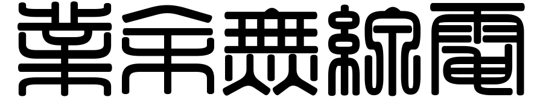

警告 / WARNING
業余無線電可能令人興奮；不可對非愛好者介紹，安利，推廣，展示，炫耀
或忽悠年齡未滿 18 歲的人士，進行CQ或發射。
Amateur radio may be exciting; don't introduce, Anli, promote, show, show off it to non-fan.
Or Huyou people under age of 18 years to CQ or Transmit.
Send comments to: bg6wri@gmail.com
Follow @BG6WRI on Twitter
Data Graphs Based on www.n0nbh.com and www.hamqsl.com/solar.html